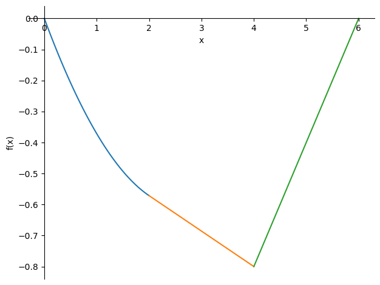
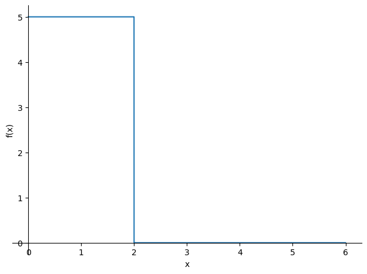
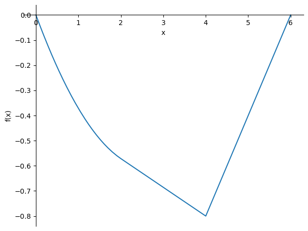

Lecture 4 exercise 1 cable
Lecture 4 exercise 1 cable#
%reset -f
import sympy as sp
L = sp.S(6)
a = sp.S(2)
b = sp.S(2)
c = L - a - b
q1 = sp.S(5)
q2 = sp.S(0)
q3 = sp.S(0)
F = sp.S(15)
Bv = (q1*a*a/2+F*(a+b))/(a+b+c)
display(Bv)
H = Bv*c*5/4
display(H)
display(H.evalf())
\[\displaystyle \frac{35}{3}\]
\[\displaystyle \frac{175}{6}\]
\[\displaystyle 29.1666666666667\]
H, x= sp.symbols('H x',positive=True)
C1, C2, C3, C4, C5, C6 = sp.symbols('C1 C2 C3 C4 C5 C6')
z1, z2, z3 = sp.symbols('z1 z2 z3',cls=sp.Function)
ODE1 = sp.Eq(H * sp.diff(z1(x),x,2) , -q1)
ODE2 = sp.Eq(H * sp.diff(z2(x),x,2) , -q2)
ODE3 = sp.Eq(H * sp.diff(z3(x),x,2) , -q3)
sol = sp.dsolve([ODE1,ODE2,ODE3],[z1(x),z2(x),z3(x)])
z1 = sol[0].rhs
z2 = sol[1].rhs
z3 = sol[2].rhs
V1 = H * sp.diff(z1,x)
V2 = H * sp.diff(z2,x)
V3 = H * sp.diff(z3,x)
eq1 = sp.Eq(z1.subs(x,0),0)
eq2 = sp.Eq(z3.subs(x,L),0)
eq3 = sp.Eq(z1.subs(x,a),z2.subs(x,a))
eq4 = sp.Eq(V1.subs(x,a),V2.subs(x,b))
eq5 = sp.Eq(z2.subs(x,a+b),z3.subs(x,a+b))
eq6 = sp.Eq(V2.subs(x,a+b),V3.subs(x,a+b)+F)
sol = sp.solve([eq1,eq2,eq3,eq4,eq5,eq6],[C1,C2,C3,C4,C5,C6])
z1 = z1.subs(sol)
z2 = z2.subs(sol)
z3 = z3.subs(sol)
display(z1)
display(z2)
display(z3)
\[\displaystyle - \frac{5 x^{2}}{2 H} + \frac{40 x}{3 H}\]
\[\displaystyle \frac{10 x}{3 H} + \frac{10}{H}\]
\[\displaystyle - \frac{35 x}{3 H} + \frac{70}{H}\]
exact
ds1 = sp.sqrt(1+sp.diff(z1,x)**2)
ds2 = sp.sqrt(1+sp.diff(z2,x)**2)
ds3 = sp.sqrt(1+sp.diff(z3,x)**2)
Taylor option 1
# ds1 = 1 + sp.diff(z1,x)**2/2
# ds2 = 1 + sp.diff(z2,x)**2/2
# ds3 = 1 + sp.diff(z3,x)**2/2
Taylor option 2
#ds1 = 1 + sp.diff(z1,x)**2/2 - sp.diff(z1,x)**4/8
#ds2 = 1 + sp.diff(z2,x)**2/2 - sp.diff(z2,x)**4/8
#ds3 = 1 + sp.diff(z3,x)**2/2 - sp.diff(z3,x)**4/8
display(ds1)
display(ds2)
display(ds3)
\[\displaystyle \sqrt{\left(- \frac{5 x}{H} + \frac{40}{3 H}\right)^{2} + 1}\]
\[\displaystyle \sqrt{1 + \frac{100}{9 H^{2}}}\]
\[\displaystyle \sqrt{1 + \frac{1225}{9 H^{2}}}\]
Length of cable
#LL = sp.integrate(ds1,(x,sp.S(0),a))+sp.integrate(ds2,(x,a,a+b))+sp.integrate(ds3,(x,a+b,L))
LL = sp.integrate(ds1.subs(H,sp.S(175/6)),(x,0,a))+sp.integrate(ds2.subs(H,sp.S(175/6)),(x,a,a+b))+sp.integrate(ds3.subs(H,sp.S(175/6)),(x,a+b,L))
display(LL) #incorrect solution integral
eq7 = sp.Eq(sp.integrate(ds1,(x,0,a))+sp.integrate(ds2,(x,a,a+b))+sp.integrate(ds3,(x,a+b,L)),sp.S(6.2558))
display(sp.simplify(eq7))
H_sol = sp.nsolve(eq7,H,30)
display(H_sol)
LL = sp.integrate(ds1.subs(H,H_sol),(x,0,a))+sp.integrate(ds2.subs(H,H_sol),(x,a,a+b))+sp.integrate(ds3.subs(H,H_sol),(x,a+b,L))
display(LL.evalf())
\[\displaystyle 6.25580223961325\]
\[\displaystyle \frac{2 \sqrt{9 H^{2} + 100} + 2 \sqrt{9 H^{2} + 1225} + \int\limits_{0}^{2} \sqrt{9 H^{2} + 225 x^{2} - 1200 x + 1600}\, dx}{3 H} = 6.2558\]
\[\displaystyle 29.1667985144668\]
\[\displaystyle -129746122929166.0\]
z1_sol = z1.subs(H,H_sol)
z2_sol = z2.subs(H,H_sol)
z3_sol = z3.subs(H,H_sol)
sp.plot((-z1_sol,(x,0,a)),(-z2_sol,(x,a,a+b)),(-z3_sol,(x,a+b,L)));

Alternative
%reset -f
import sympy as sp
L = sp.S(6)
a = sp.S(2)
b = sp.S(2)
c = L - a - b
F = sp.S(15)
q0 = sp.S(5)
H, x= sp.symbols('H x')
C1, C2 = sp.symbols('C1 C2')
z = sp.symbols('z',cls=sp.Function)
q = q0*(sp.S(1)-sp.Heaviside(x-a))+F*sp.DiracDelta(x-(a+b))
sp.plot(q,(x,0,L))
sp.integrate(q,(x,0,L)).evalf()

\[\displaystyle 25.0\]
ODE = sp.Eq(H * sp.diff(z(x),x,2) , -q)
sol = sp.dsolve(ODE,z(x))
z = sol.rhs
V = H * sp.diff(z,x)
eq1 = sp.Eq(z.subs(x,0),0)
eq2 = sp.Eq(z.subs(x,L),0)
sol = sp.solve([eq1,eq2,],[C1,C2])
z = z.subs(sol)
eq3 = sp.Eq(z.subs(x,a+b),sp.S(0.8))
H_sol = sp.nsolve(eq3,H,30)
display(H_sol)
\[\displaystyle 29.1666666666667\]
z_sol = z.subs(H,H_sol)
sp.plot(-z_sol,(x,0,L))

<sympy.plotting.plot.Plot at 0x22b4c2cbf10>
ds = sp.sqrt(1+sp.diff(z.subs(H,sp.S(175/6)),x)**2)
LL = sp.integrate(ds,(x,0,L))
display(LL)
---------------------------------------------------------------------------
KeyboardInterrupt Traceback (most recent call last)
~\AppData\Local\Temp\ipykernel_19148\3901687175.py in <module>
1 ds = sp.sqrt(1+sp.diff(z.subs(H,sp.S(175/6)),x)**2)
----> 2 LL = sp.integrate(ds,(x,0,L))
3 display(LL)
~\Anaconda3\lib\site-packages\sympy\integrals\integrals.py in integrate(meijerg, conds, risch, heurisch, manual, *args, **kwargs)
1564
1565 if isinstance(integral, Integral):
-> 1566 return integral.doit(**doit_flags)
1567 else:
1568 new_args = [a.doit(**doit_flags) if isinstance(a, Integral) else a
~\Anaconda3\lib\site-packages\sympy\integrals\integrals.py in doit(self, **hints)
498 if reps:
499 undo = {v: k for k, v in reps.items()}
--> 500 did = self.xreplace(reps).doit(**hints)
501 if isinstance(did, tuple): # when separate=True
502 did = tuple([i.xreplace(undo) for i in did])
~\Anaconda3\lib\site-packages\sympy\integrals\integrals.py in doit(self, **hints)
549 **eval_kwargs)
550 else:
--> 551 antideriv = self._eval_integral(
552 function, xab[0], **eval_kwargs)
553 else:
~\Anaconda3\lib\site-packages\sympy\integrals\integrals.py in _eval_integral(self, f, x, meijerg, risch, manual, heurisch, conds, final)
940 # Piecewise antiderivatives need to call special integrate.
941 if isinstance(f, Piecewise):
--> 942 return f.piecewise_integrate(x, **eval_kwargs)
943
944 # let's cut it short if `f` does not depend on `x`; if
~\Anaconda3\lib\site-packages\sympy\functions\elementary\piecewise.py in piecewise_integrate(self, x, **kwargs)
363 """
364 from sympy.integrals import integrate
--> 365 return self.func(*[(integrate(e, x, **kwargs), c) for e, c in self.args])
366
367 def _handle_irel(self, x, handler):
~\Anaconda3\lib\site-packages\sympy\functions\elementary\piecewise.py in <listcomp>(.0)
363 """
364 from sympy.integrals import integrate
--> 365 return self.func(*[(integrate(e, x, **kwargs), c) for e, c in self.args])
366
367 def _handle_irel(self, x, handler):
~\Anaconda3\lib\site-packages\sympy\integrals\integrals.py in integrate(meijerg, conds, risch, heurisch, manual, *args, **kwargs)
1564
1565 if isinstance(integral, Integral):
-> 1566 return integral.doit(**doit_flags)
1567 else:
1568 new_args = [a.doit(**doit_flags) if isinstance(a, Integral) else a
~\Anaconda3\lib\site-packages\sympy\integrals\integrals.py in doit(self, **hints)
611 antideriv = None
612 else:
--> 613 antideriv = self._eval_integral(
614 function, xab[0], **eval_kwargs)
615 if antideriv is None and meijerg is True:
~\Anaconda3\lib\site-packages\sympy\integrals\integrals.py in _eval_integral(self, f, x, meijerg, risch, manual, heurisch, conds, final)
1050
1051 # g(x) has at least a DiracDelta term
-> 1052 h = deltaintegrate(g, x)
1053 if h is not None:
1054 parts.append(coeff * h)
~\Anaconda3\lib\site-packages\sympy\integrals\deltafunctions.py in deltaintegrate(f, x)
157 g = f.expand()
158 if f != g: # the expansion worked
--> 159 fh = integrate(g, x)
160 if fh is not None and not isinstance(fh, Integral):
161 return fh
~\Anaconda3\lib\site-packages\sympy\integrals\integrals.py in integrate(meijerg, conds, risch, heurisch, manual, *args, **kwargs)
1564
1565 if isinstance(integral, Integral):
-> 1566 return integral.doit(**doit_flags)
1567 else:
1568 new_args = [a.doit(**doit_flags) if isinstance(a, Integral) else a
~\Anaconda3\lib\site-packages\sympy\integrals\integrals.py in doit(self, **hints)
611 antideriv = None
612 else:
--> 613 antideriv = self._eval_integral(
614 function, xab[0], **eval_kwargs)
615 if antideriv is None and meijerg is True:
~\Anaconda3\lib\site-packages\sympy\integrals\integrals.py in _eval_integral(self, f, x, meijerg, risch, manual, heurisch, conds, final)
1096 # rewrite using G functions
1097 try:
-> 1098 h = meijerint_indefinite(g, x)
1099 except NotImplementedError:
1100 _debug('NotImplementedError from meijerint_definite')
~\Anaconda3\lib\site-packages\sympy\integrals\meijerint.py in meijerint_indefinite(f, x)
1670 """
1671 results = []
-> 1672 for a in sorted(_find_splitting_points(f, x) | {S.Zero}, key=default_sort_key):
1673 res = _meijerint_indefinite_1(f.subs(x, x + a), x)
1674 if not res:
~\Anaconda3\lib\site-packages\sympy\integrals\meijerint.py in _find_splitting_points(expr, x)
422 compute_innermost(argument, res)
423 innermost = set()
--> 424 compute_innermost(expr, innermost)
425 return innermost
426
~\Anaconda3\lib\site-packages\sympy\integrals\meijerint.py in compute_innermost(expr, res)
420 return
421 for argument in expr.args:
--> 422 compute_innermost(argument, res)
423 innermost = set()
424 compute_innermost(expr, innermost)
~\Anaconda3\lib\site-packages\sympy\integrals\meijerint.py in compute_innermost(expr, res)
420 return
421 for argument in expr.args:
--> 422 compute_innermost(argument, res)
423 innermost = set()
424 compute_innermost(expr, innermost)
~\Anaconda3\lib\site-packages\sympy\integrals\meijerint.py in compute_innermost(expr, res)
413 if not isinstance(expr, Expr):
414 return
--> 415 m = expr.match(p*x + q)
416 if m and m[p] != 0:
417 res.add(-m[q]/m[p])
~\Anaconda3\lib\site-packages\sympy\core\basic.py in match(self, pattern, old)
1700 # match non-bound symbols
1701 canonical = lambda x: x if x.is_Symbol else x.as_dummy()
-> 1702 m = canonical(pattern).matches(canonical(self), old=old)
1703 if m is None:
1704 return m
~\Anaconda3\lib\site-packages\sympy\core\add.py in matches(self, expr, repl_dict, old)
551
552 def matches(self, expr, repl_dict=None, old=False):
--> 553 return self._matches_commutative(expr, repl_dict, old)
554
555 @staticmethod
~\Anaconda3\lib\site-packages\sympy\core\operations.py in _matches_commutative(self, expr, repl_dict, old)
334 if free:
335 did.update(free)
--> 336 expr = collect(expr, free)
337 if expr != was:
338 i += 0
~\Anaconda3\lib\site-packages\sympy\simplify\radsimp.py in collect(expr, syms, func, evaluate, exact, distribute_order_term)
362 for a in expr.args if a != o]) + o
363 elif expr.is_Mul:
--> 364 return expr.func(*[
365 collect(term, syms, func, True, exact, distribute_order_term)
366 for term in expr.args])
~\Anaconda3\lib\site-packages\sympy\simplify\radsimp.py in <listcomp>(.0)
363 elif expr.is_Mul:
364 return expr.func(*[
--> 365 collect(term, syms, func, True, exact, distribute_order_term)
366 for term in expr.args])
367 elif expr.is_Pow:
~\Anaconda3\lib\site-packages\sympy\simplify\radsimp.py in collect(expr, syms, func, evaluate, exact, distribute_order_term)
366 for term in expr.args])
367 elif expr.is_Pow:
--> 368 b = collect(
369 expr.base, syms, func, True, exact, distribute_order_term)
370 return Pow(b, expr.exp)
~\Anaconda3\lib\site-packages\sympy\simplify\radsimp.py in collect(expr, syms, func, evaluate, exact, distribute_order_term)
370 return Pow(b, expr.exp)
371
--> 372 syms = [expand_power_base(i, deep=False) for i in syms]
373
374 order_term = None
KeyboardInterrupt: